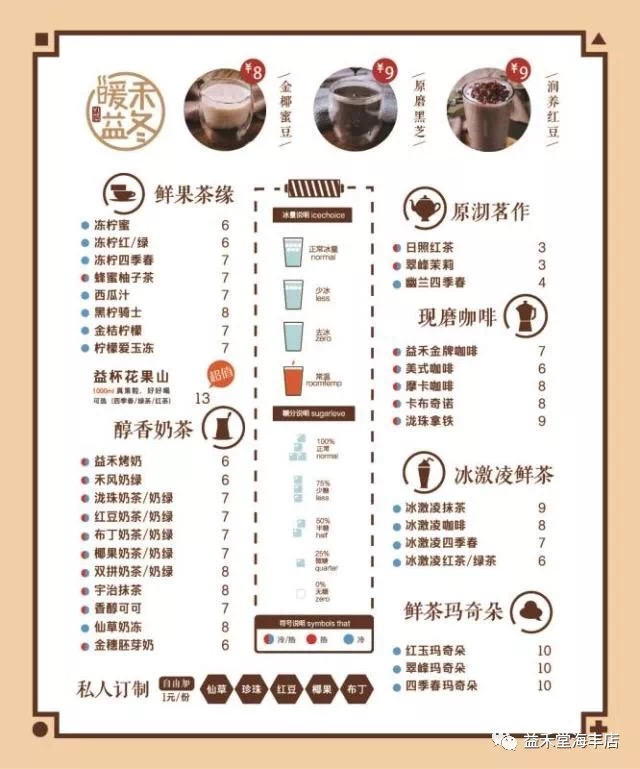
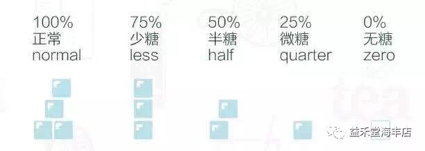
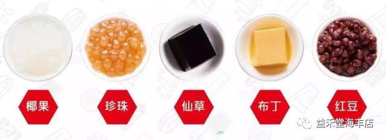
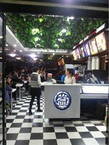
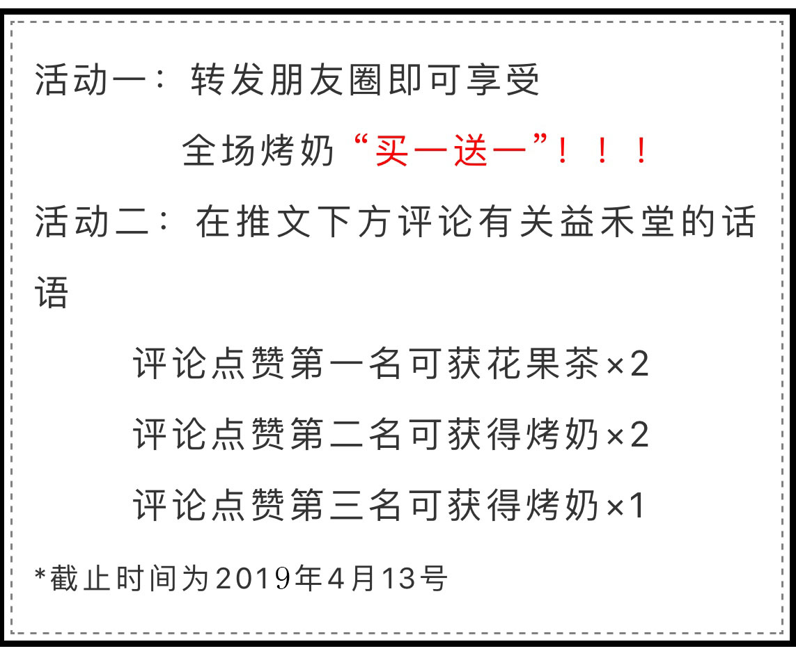
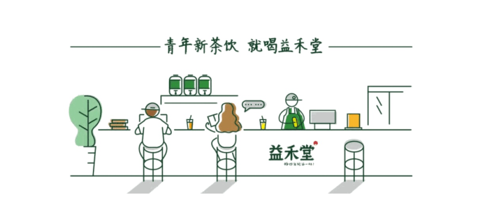

听到益禾堂 大家的第一反应就是学校奶茶的标配 大多数益禾堂仅仅只能在校园里看见 可这家校园网红店“益禾堂”强势进驻汕尾海丰 益禾堂的产品分为几个系列 招牌烤奶系列，也是益禾堂的主打产品 现磨咖啡系列 冰淇淋系列
很多人觉得正常冰量的话喝完还剩半杯冰很不爽 没有冰块的话就喝不出那种爽感 不过最终还是看个人喜好啦❤
需要提醒大家的是 益禾堂的整体甜度比较甜 建议大家在点单的时候选择少糖或者半糖❤ 
喝东西的时候总得有点口感 才觉得喝得过瘾 而加小料不会导致奶茶的口感发生变化❤ 
店铺展示
News!
海丰益禾堂店 地址：广东汕尾市海丰县海城镇人民西路益禾堂
